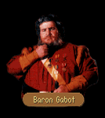

|
|
|  |
|
|
| CHAPTER 2 - FIRST | CHAPTER 2 - SECOND |
|
GABOT:
You should know that there are not many things that anger me. But as I feel, I never have been
angry until this very moment! JAMES: If I have given you offense... GABOT: Offense?! Every day my men ride to the border of the Northlands to hold back Delekhan's obscene dogs, every day they thrust their lives into the breech to buy another day of the Kingdom's freedom! These mountain tops are littered with the bodies of men who have given their lives in that cause and you spit on their graves by bringing a moredhel into my castle! I should hang you from the bailey! JAMES: He has cause to be here. Prince Arutha believes this moredhel may have information that can lead us to the Nighthawks... GABOT: Damn Prince Arutha! He has no conception of what the moredhel are like and the fact that he has taken this moredhel's word proves it. Seigneur Locklear told me the story about this moredhel and I no more believe in his virtue than I believe in Delekhan's strength! JAMES: Baron, I have a duty to perform and if in the name of that duty I must offend a Baron then so be it! As I have had cause to come to this place, I need a few answers and I sincerely believe it would benefit the both of us to help one another. If you choose to block me, then I am sure that Prince Arutha would be more than happy to inform King Lyam that one of his subjects has deemed himself above imperial courtesy! GABOT: Seigneur, as a border baron I owe fealty to King Lyam and he alone! What Prince Arutha may or may not do is his own affair. But if by answering your questions I may be shod of you all the more quickly, I am at your disposal! What do you want?
|
GABOT:
I am glad to see you once more. I am sorry about my earlier behavior. Just previous to your
arrival, I was informed that a few of my men were killed and the issue was still on my mind.
Please let me know however I may be of assistance.
|
| HELPING OUT |
JAMES: Who is in charge of your guards here? I would be interested in speaking to him...GABOT: My guards are hard at work. If you wish to speak to the guards, I can arrange for you to walk guard duty, Seigneur. Otherwise, I will not have their schedules disrupted. Shall I have Lieutenant Aaron put you on the night watch?
| YES | NO |
|
JAMES:
Sounds marvelous. When do I start? GABOT: Lieutenant Aaron! I have a new recruit I would like for you to assign... It was late. Breathing warmth into his cupped hands, James paced the frost-touched flagstones between the postern and bailey gates and looked out into the darkness beyond the castle. Nothing was moving in the mists. Like the world within the gates, things seemed orderly in the extreme. Too orderly. Even in Krondor, the Prince's control was far from complete with the Upright Man running matters in the sewers and scoundrels of various stripes calling the shots in the poorer quarters. Here, it was as if the world outside Northwarden simply did not exist in any other context than how Baron Gabot dictated it to his men. It would be entirely too easy for an outside force to take advantage of the rigor with which he ruled his men. "It's time Jimmy the Hand did a little something off schedule," James muttered, scaling the bailey wall with little trouble. Settling himself in a patch of shadow, he focused his eyes on the courtyard below and folded his arms across his chest. Now it was time for the real guard duty... GABOT: I would be most interested to know why you felt it necessary to have me awakened in the middle of the night. JAMES: It would have been preferable if you had come when I called. Your guard shifts are utterly inadequate, Baron. Last night, while I was on guard duty, I decided to vary the schedule a bit and see what happened. When I watched the bailey gate when I was to be on the other side of the castle, I noticed a soldier slipping a note to another man who was waiting outside the castle gate. A few minutes later, when I shifted to the opposite side, again I saw another instance of someone attempting to steal a griefmaker from the castle armory. I stopped him, naturally. There were several other instances. GABOT: And the note passed through the bailey gate? JAMES: Harmless. A love letter from a soldier quartered here named Corbi to a girl named Thea... You've become too regimented here. Your schedules are known outside the castle, very likely made known by a spy working within these very walls. I urge you to take greater precautions and to reevaluate your staff. It could be the downfall of this castle. GABOT: I shall...consider it... In the meantime, I ask you accept something as a token of gratitude. There is a suit of Euliliko Armor that I no longer have a need for. You may have it if you wish. It makes no difference to me.
|
JAMES:
As you don't seem to wish my help, I withdraw the offer. GABOT: Duly noted, Seigneur.
|
| FIRST GOODBYE | SECOND GOODBYE |
|
JAMES:
I think we know what we came here to find out. It would do me good to know that if we ever meet
again, you will receive your royal guests with a little more courtesy. GABOT: I will take it under advisement. Please find your own way out. JAMES: Very well. I thank you for your outstanding hospitality. We will be going now.
|
JAMES:
Thanks once again for your help, baron. Your answers help clear a few things up for us at
least... GABOT: Glad I could be of service. You'll forgive me if I don't have time to show you out. JAMES: Certainly. I don't imagine it will be too difficult to find our way.
|

| CHAPTER 3 - FIRST | CHAPTER 3 - SECOND |
|
GABOT:
Seigneur, I would talk with you but I am not entirely comfortable with the moredhel's presence.
If he could step out of the room? GORATH: I will be waiting in the antechamber. GABOT: This will take but a few moments... James, what do you know about the experimental projects that we have going on here at Northwarden? JAMES: Very little. I believe the Prince mentioned you had discovered an explosive powder similar to naphtha but I don't know much beyond that. GABOT: Our powder is similar to naphtha, yes, but many times stronger. With a portion that would scarcely fill my hand, we can rain two hundred pound iron balls onto enemy forces. It would destroy anything it hit. Unfortunately it takes a team of ten men a half hour to re-load the weapon and as yet its accuracy is not such that I would wish to count upon it in battle. In many years, it is possible it will be a weapon of monstrous power, but we will first have to learn how to master it... JAMES: It will be a great contribution to the Kingdom's arsenal. GABOT: Yes, and it would be an even greater contribution to Delekhan. What I haven't told you is that thirty of Northwarden's pigs have been stolen over the past six months. JAMES: Pigs?... I don't understand, what do missing pigs have to do with anything? GABOT: Pig urine is a principle component in the formulation of the powder and our swine can't survive the Northland cold. If someone in the castle has leaked the formula to them, they may well be attempting to build up stock for their own experiments.
|
What can I do for you, James?
|
| ENEMY ACTIVITY |
JAMES: What has the enemy activity in the region been like? Any signs of increase?GABOT: We can, at least, substantiate Prince Arutha's fears that the moredhel plan to attack. A few of my scouts slipped into Raglam and discovered a catapult and several siege engines under construction. Any number of Quegian mercenaries have already arrived in town, though none yet know where they are being sent. It seems that the native moredhel have adapted an attitude of wait and see how the battle is going before committing to Delekhan's strike force.
JAMES: Gorath told us as much. The run against Sethanon apparently left a bad taste in the mouths of the moredhel clans and this Delekhan doesn't have Murmandamus' silver tongue. He's had to bully several of the clans into joining him, though a few of the larger clans have sworn to withhold their support until Delekhan proves himself.
GABOT: I am not so much concerned about the Quegians in the battle as I am the possibility the moredhel may cook up something unexpected. There is talk Delekhan has a circle of advisers known as The Six, magicians of some order. I don't relish the thought of running up against some of the tricks that Murmandamus pulled during the battle that destroyed Armengar. Duke Martin has been telling me about it, though I understand he was absent before the final assault began.
JAMES: Duke Martin is here?
GABOT: He arrived on a social visit shortly before your friend. I was the Huntsmaster of Carse when he was still working for the Duke of Crydee and he recommended me to this post following Baron Rossol's death. When your friend arrived from Krondor with news of another possible attack, he decided to stay and help however he could here until Prince Arutha advises him further. Right now he and Seigneur Locklear are leading a small scouting expedition into the high hills.
JAMES: So what about this magic problem? Are you going to hire any magicians?
GABOT: Long ago, I saw the wisdom that Duke Borric displayed in having Kulgan and Pug in his duchy. It was one of the first things I did once I assumed command here. Since he felt uncomfortable here for some reason, Patrus is off working on a few tricks of his own to counter any moredhel spellcraft.
| GOODBYE |
|
JAMES:
Thanks once again for your help, Baron. Your answers help clear a few things up for us
at least. GABOT: Glad I could be of service. You'll forgive me if I don't have time to show you out. JAMES: Certainly. I don't imagine it will be too difficult to find our way.
|

JAMES:
What of Duke Martin? I know he was visiting here.
GABOT:
He already is in the field with my rangers. I want you two to work with him to find ways to
slow down or stop the oncoming enemy companies. Our scouts have estimated the moredhel have
fielded about fifteen hundred men.
JAMES:
You have three hundred men here and a castle! It's far more than you need to stop that many
soldiers.
GABOT:
If there are Nighthawks that have infiltrated my troops, we will likely lose more than field
captains before this is all over. We have to assume for the moment that the moredhel know
something that we don't. If we can stop even half their number, I imagine we can diffuse
whatever plan it is they have. So, any questions before you begin?
IF TAMNEY FOUND:
JAMES:
We've found Tamney as you requested. He has told us he will be returning here as quickly as
possible.
GABOT:
I appreciate your efforts, but I have other matters to concern me at the moment. I still do not
like the look of this battle. Is there anything you need from me?
CHAPTER 5 - FIRST
CHAPTER 5 - SECOND
GABOT:
It seems our time for preparations is at an end. Two of my field captains were found dead in
areas through which a moredhel strike force would likely come. That leaves me with one garrison
company and two field companies operating under green commanders. That does not make for an
advantage in a siege.
GABOT:
I still do not like the look of this battle, Seigneur James. What do you need?
| DUKE MARTIN |
JAMES: Where can we find Duke Martin? Is he in the castle somewhere?GABOT: I asked him to stay relatively close to the castle so my guards could find him in the instance of an emergency. You will have to search for him yourself. While you are at it, perhaps you can also find what has become of our minstrel, Tamney.
JAMES: He may have quit the castle. Minstrels are not noted for their staying power through great battles.
GABOT: It will work against the morale of the men should he remain absent. I want you to find him and use whatever means you have at your disposal to bring him back here, even if you bring him back in chains and rucksack tied over his head. With the battle coming close to hand, I want nothing to divide the men.
| FIRST GOODBYE | SECOND GOODBYE |
|
JAMES:
Well, with all that in mind, I think we can probably handle our assignments. GABOT: Excellent. I shall be glad to see you and Locklear in action. Patrus, you stay with them and help them in any way you can. You are far more familiar with the area and as lucid at giving directions as any of the rest of my men. JAMES: We're off then. We'll come back and report to you later if we find anything important or if Duke Martin sends us.
|
JAMES:
We should probably get back and find Duke Martin. He's probably wondering where we've gotten
off to. GABOT: Then go with my blessing, but mind where you are and what you are doing. I can't afford to lose a man at the moment. JAMES: We appreciate that. Health to you, Baron Gabot.
|